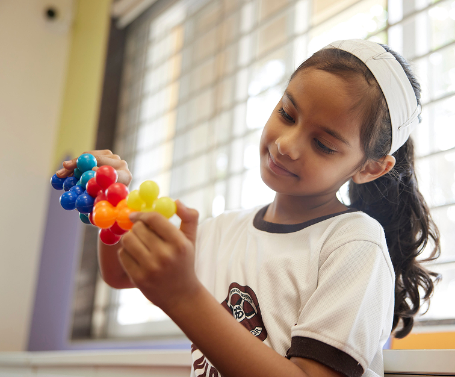
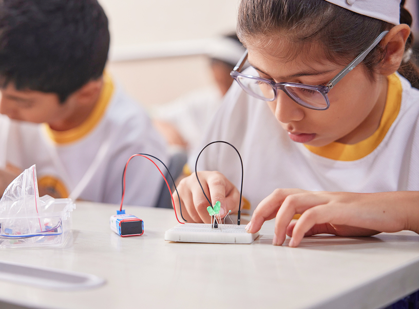
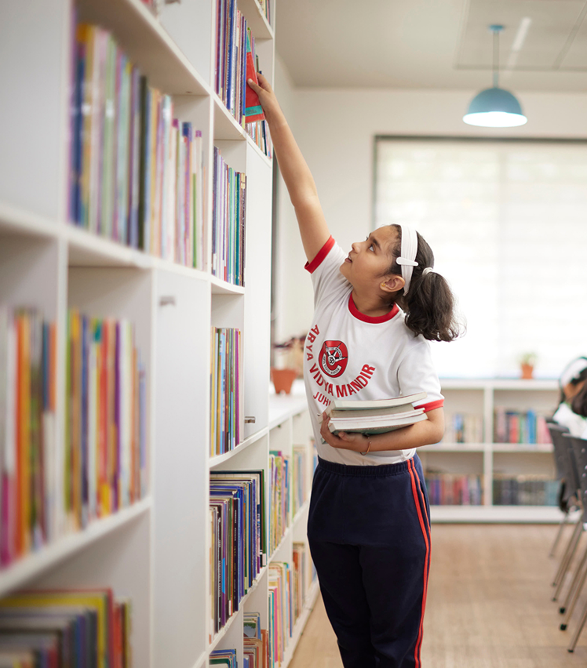
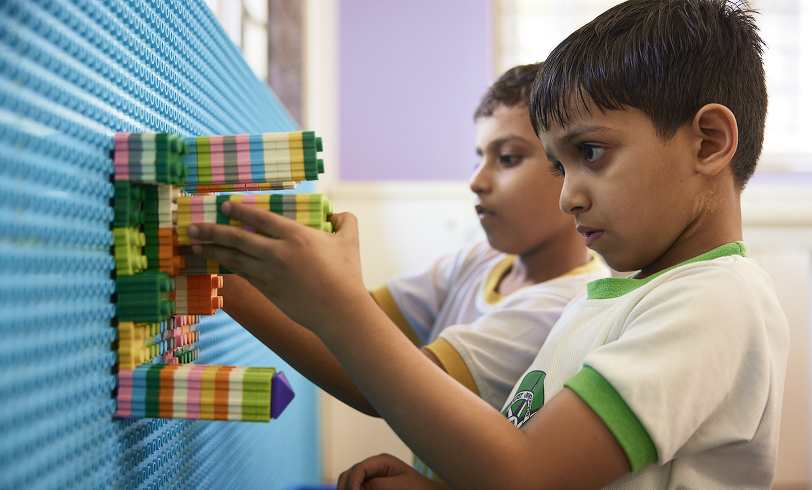

Where strong foundations grow into skills for life.

In-depth learning without textbooks
With no textbooks in Primary School, our students read widely and research independently, developing their abilities to think for themselves.
Making learning experiential across every subject
Children learn through a process of ‘do, discover and reflect’. Across subjects, from science to social studies, students understand concepts and apply them.
Design Thinking that develops problem solving
PlayTrails focuses on developing communication, motor skills, creativity and social confidence. Children learn to listen, express ideas, collaborate with peers.


Making lessons more interactive and dynamic
Teaching tools like gamification and blended learning help our teachers to engage students, while reinforcing understanding.
Life skills for everyday confidence
The Assisting Young Minds (AYM) team engages with students every week to build self-awareness, communication, decision-making and empathy skills.
Cultural and artistic grounding
Performing arts, recitation and yoga connect children to Indian values while building discipline and self-belief.
Learning designed for every child
Differentiated learning ensures children receive the right level of challenge, guidance and encouragement.
